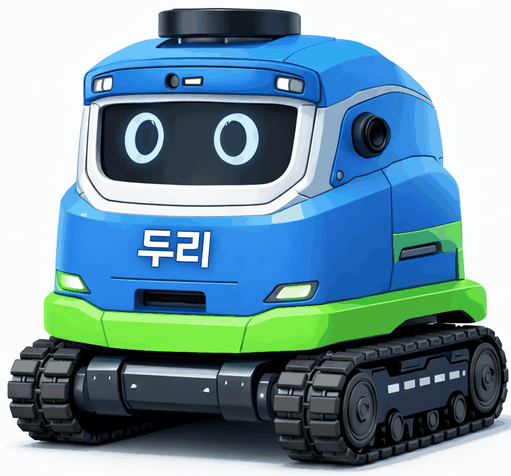

두리 — AI 스마트 순찰 로봇
보도 파손을 찾는 순찰 로봇 제안
Background
점자블록이 깨지면 그것을 가장 먼저 밟는 사람이 정작 볼 수 없어서 신고가 늦어집니다. 경기도의 점자블록 적합 설치율 4%와 용인시 포트홀 2년간 75.6% 증가를 근거로 문제를 잡고, 보도를 자율 순찰하면서 파손을 찾아 위치와 함께 보고하는 로봇을 제안했습니다. 실물 제작까지 가는 대회는 아니어서 시뮬레이션으로 검증한 제안 단계까지입니다.
Contributions
단차를 넘는 기구
보도는 평지가 아니라서 보도블록 단차를 넘지 못하면 순찰 경로가 성립하지 않습니다. 그래서 바퀴 대신 무한궤도로 잡았습니다. 기구가 정해져야 실을 수 있는 무게와 카메라 높이가 따라옵니다.

탐지·주행·보고 구조 정리
탐지 모델이 무엇을 찾았는지와 로봇이 어디로 갈지는 별개의 문제입니다. YOLOv8 탐지 결과를 ROS2 주행 제어로 넘기고, 찾은 파손에 유지보수 우선순위를 붙여 보고하는 구조를 설계했습니다.
Unity 시뮬레이션 검증
도면만으로는 실제로 동작하는지 전달할 수 없습니다. Unity로 보도 환경을 만들어 순찰 경로와 탐지 동작을 돌리고, 그것으로 실현 가능성을 확인했습니다.